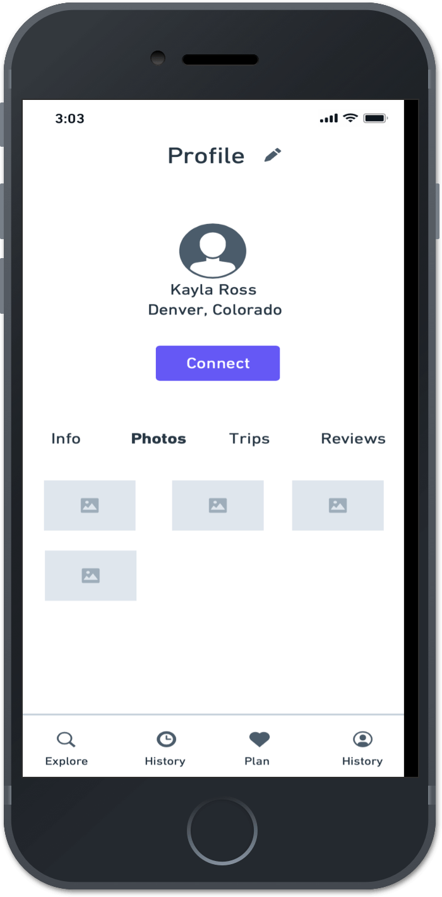
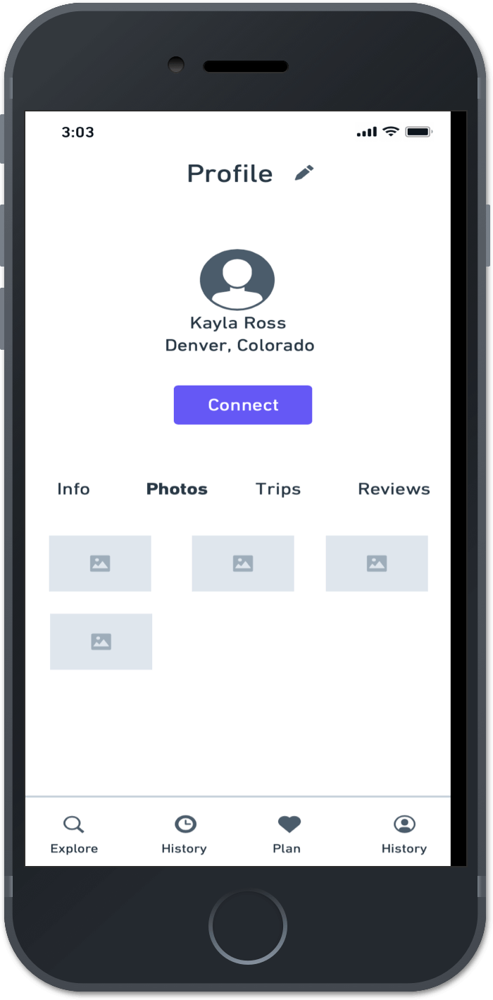

TentDays
We present TentDays, a website that seamlessly allows users to plan their camping trips with minimal effort to cater to our users’ preferences.
We present TentDays, a website that seamlessly allows users to plan their camping trips with minimal effort to cater to our users’ preferences.
The camping app platform is a fairly new market TentDays looked to find a unique approach to infiltrate the market and offer a beneficial approach to providing a camping app service. Ultimately, it was important to provide a space people could utilize to plan their camping trips that is intuitive to use.
The task at hand was to design a camping app platform that catered to the market and encouraged the targeted audience to use it. Although there are many camping apps available to users however according to research users are not utilizing their available resources. In addition to finding a new approach to making a name for ourselves in the camping app platform, our client was very concerned with camping apps providing a solution to all the users’ pain points. The viable solution resulted in our creation of TentDays, a one-stop-shop for all the users camping trip planning needs including collaboration, resources, and planning assistance.
We present TentDays, a website that seamlessly allows users to plan their camping trips with minimal effort to cater to our users’ needs. TentDays allows users to search for the perfect dispersed camping location while being able to see other reviews and experiences to guide them. In addition, TentDays allows for easy planning and packing with the suggested packing list and activity suggestions. This allows users to share and collaborate on a public or private forum with friends, family, and like-minded people. Lastly, the platform supports easy and intuitive use and collaboration which ultimately will encourage outdoor enthusiasts to start utilizing the tool available to them.
After an in-depth analysis of its three main competitors Oh Ranger Park Finder, Recreation.gov, and Reserve America. The facts show that the three competitors have many of the same strengths with little variations which allow them to stand apart from one another. Oh, Ranger Park Finder focuses on sites in National Parks and Public Land. Recreation.gov broadens its horizons while committing to being a door to sites as well as activities. Lastly, Reserve America sets itself apart by being one of the first sites to all online reservations. It is evident that the opportunities for a new company are prevalent after a deep review of its competitors. First, it is vital that the new site will be very well organized and allow users to personalize their pages to share with the public space. Furthermore, it is important that collaboration is extended in new and creative ways such as reviews and experiences at specific sites. In addition, there is an opportunity to create a more modern site with more features and search filters. The future company should target one of these niche audiences in order to reach and help a greater depth of specified users.
It is important that a new app breaking into the camping app market maintains the strengths found in its competitors without carrying over their weaknesses.In addition allowing for more search filters and planning features is key to meeting our users needs.
It is important that a new site breaking into the camping app market maintains the strengths found in its competitors without carrying over their weaknesses. There is room for a new competitor in the market if the said competitor is able to give enough value within their product to drive use. Targeting a new niche market for those who enjoy dispersed camping and have a need for an app to make the planning process easier for them will drive traffic to a new app on the market.
Using the quantitative and qualitative data from interviews and survey results, I defined the three target group profiles to better empathize with my main user groups and prioritize goals according to their needs.
To visualize and make more tangible the individual steps that a user makes during the course of the app and its possibilities; I have created a corresponding user flows.
Our first user flow showed users steps to view more about the site before signing up, as well as creating a new account to be able to interact with the app.
Based on the insights gained from the initial content audit and competitor analysis with potential users, I defined the sitemap for TentDays and then evaluated it via tree tests with potential users.
With low-fidelity Wireframes, the general structure of the website could easily be tested in usability tests. Without much effort, adjustments could be made before going into the much more time consuming digital implementation. It was found that adjustments to the navigation bar needed to be altered to create an intuitive navigation system. Furthermore, alterations to the “how to use the site” were found to be necessary.
 

When asked to navigate through the sign up version of the onboarding process most users opted not to participate in the “how to use ShelfSpace” part of the process. I was informed that most users will skip this process or quickly click through the process not allowing time to retain information.

To ratify this pain point in my second iteration I choose to place a “learn how to use ShelfSpace” section on the landing page which automatically disappears after you naturally complete the task while using the site.
When asked to navigate further through the site to create new content and add it to shelf users were confused and felt that the navigation felt cluttered.

I made the navigation more intuitive by narrowing down user pathways and adding recognizable icons which uses had been explained when users first entered the site during the “how to use ShelfSpace” tutorial.
Finally, when asked to add content after viewing their home page users were confused by the navigation of this process. Users were also concerned with how their privacy would be made a main priority on our site.

To solve these concerns a more intuitive process for adding content was created as well as all content, private and public tabs and options were created which were easily identifiable.

The visual design was developed by iterating from mood board to the UI kit and finally to the creation of the style guide.


Here user testing showed that some small alterations that needed to be done to the call to action buttons on the screen to improve usability. Users prefer the Learn More call to action to have an outline surrounding the button. It was discovered that the white button blended into the background of the screen making readability and navigation unreadable.
When asked to navigate through the sign up version of the onboarding process there was still confusion surrounding how to navigate the “learn how to use ShelfSpace '' section. Users identified pain points suggesting more clarification be added to show what steps were to be followed as well as showing completion.

To ratify the confusion I add “steps” above the task as well as a large green completion check mark when the task was done.

When asked to complete the onboarding process which includes the “how to use ShelfSpace” prompts users were confused as to where the “ideas” came from.
To ratify the confusion I added a hover feature which showed the user which page the idea came from and allows you to visit this link.

Finally, users were confused by the lack of an empty state if they chose to forgo the “how to use ShelfSpace '' part of the navigation process. To eliminate this pain point empty states were implemented with prompts to add new content.
We present ShelfSpace, a website that seamlessly allows users to combine all aspects of cloud storage with the benefits that you receive on a social platform. Shelfspace allows storage for all types of files (docs, photos, links, events and creative ideas) with an advanced social platform. This allows users to share and collaborate on a public or private forum with friends, family, and like-minded people. Lastly, the platform supports optimal organization allowing files to be pre-organized in either a public or private space depending on the user's preferences.

It was a rewarding experience to design a product from scratch. Though the direction wasn’t clear in the beginning, each step added clarity and helped me to get closer to the final prototype. While there are still a lot of possibilities to explore to combine the social sphere with a functioning cloud service, I believe this is a good start. A few insights during the usability tests were particularly surprising to me. Some of the elements which I thought were intuitive were found to be pain points. However, eventually, the testing and feedback allowed me to design an even better solution catered to the user’s pain points. I learned that research and testing are vital to completing any project. If I had more time, I would have considered doing more research at different steps in the process.